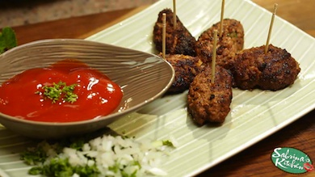

- RECIPES
- EPISODE GUIDE
MORE FROM THE SHOW

BEEF KEBAB BITES with DEL MONTE MMK Dipping Sauce
Here's how to make the dish
- Mix all together then add a whole egg
- Roll meat into balls
- In heated pan with olive oil place individual meat rolls
- Turn to all sides until all golden brown
- Stick into toothpicks and serve with a siding of yogurt and cucumber salad and a dipping sauce of del monte mmk tomato sauce.
- The smells of the cumin garlic onions and beef will be absolutely irresistable!!
- Enjoy!
From my kitchen to yours with love, Mwahhh! -S
Ingredients:
- one cup ground beef
- half a cup chopped onions
- half a cup chopped garlic
- 3 tablespoon del monte mmk tomato sauce
- half a teaspoon cumin
- a palm full of chopped parsley